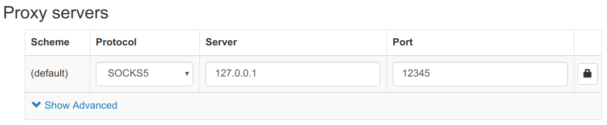
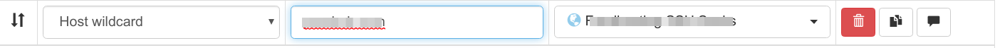

Tunneling Chrome tabs via SSH
The problem: you want to tunnel the traffic for only certain browser tabs over SSH because your work restricts access… or you're doing something dodgy. I don't know, and I don't judge.
The solution: get another job.
The real solution: do this instead.
Assumptions: You are running a Unix-like OS and have already configured a working SSH connection to your target host of choice. If not, go here.
-
Install Proxy Switchy Omega in Chrome from the Chrome Web Store.
-
In a terminal, connect to the host you want your traffic coming out of with SOCKS forwarding enabled:
1$ ssh -D 12345 hostname``
You can choose a different port number, whatever suits.
-
Set up a Proxy Server in Proxy Switchy Omega like this:

- Set up Auto Switch rules matching the domains you want to go over the SSH connection:

-
Click the Proxy Switchy Omega extension icon in your Chrome toolbar and enable “Auto Switch”
-
You can test the redirections are working by disconnecting SSH and trying to go to a site in the rules list which should fail with “No connection”. Bring SSH back up and it should work again.